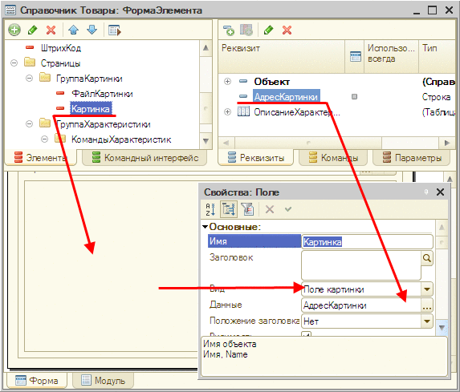

Глава 20. Механизм временного хранилища, работа с файлами и картинками
В «1С:Предприятии» существует механизм работы с временным хранилищем, обеспечивающий хранение некоторых данных, привязанных к сеансу. Кроме того, реализован механизм работы с файлами, который обеспечивает обмен файлами между информационной базой и клиентским приложением. Особенностью данного механизма является то, что он ориентирован на использование в тонком клиенте и веб-клиенте и разработан с учетом ограничений на работу с файлами, накладываемых веб-браузерами.
Механизм временного хранилища совместно с механизмом работы с файлами предоставляет набор, с помощью которого можно поместить данные, хранящиеся локально у пользователя, во временное хранилище информационной базы, перенести эту информацию из временного хранилища в базу данных и получить ее обратно на компьютер пользователя. Наиболее распространенные прикладные задачи, решаемые этими механизмами, – это хранение сопроводительной информации, например, изображений товаров, связанных с договорами документов и т. п. Механизмы временного хранилища и работы с файлами часто используются совместно, но могут использоваться и по отдельности.
20.1. Временное хранилище
Временное хранилище – это специализированное хранилище информации, в которое может быть помещено значение. Основное назначение – это временное хранение информации при клиент-серверном взаимодействии до ее переноса в базу данных.
Необходимость во временном хранилище возникает, например, из-за того, что в модели работы веб-браузера требуется передать выбранный пользователем файл непосредственно на сервер без возможности его хранения на клиенте. При передаче файла он помещается во временное хранилище и уже потом может быть использован при записи объекта в базу данных.
Можно использовать временное хранилище как универсальное хранилище с контролируемым временем жизни данных:
● Если при помещении данных во временное хранилище была выполнена привязка данных к некоторой форме, то время жизни сохраненных данных зависит от продолжительности жизни формы, к которой привязаны данные. При удалении объекта формы временное хранилище будет очищено от всей связанной с ней информации.
● Если при помещении данных во временное хранилище привязка к форме не была выполнена, то очистка временного хранилища будет выполнена в следующих случаях:
● При следующем запросе формы.
● При следующем серверном вызове из клиентского общего модуля.
● При контекстном и неконтекстном клиентских вызовах из формы.
● При серверном вызове из модуля команды. Если вызов сервера осуществляется для помещения значения во временное хранилище, то очистка не производится. Очистка производится после того, как вызов закончил свою работу.
То есть можно поместить одно или несколько значений во временное хранилище, а в следующем вызове это значение использовать. При этом после использования и перед тем, как серверный вызов будет окончен, помещенное значение будет автоматически удалено.
Наиболее типичная прикладная задача, решаемая временным хранилищем, – обеспечение доступа к файлам или картинкам до того, как объект будет записан в информационную базу, например, в форме элемента.
Данные, помещенные в хранилище, идентифицируются уникальным адресом, который в дальнейшем можно использовать в операциях записи, чтения или удаления. Этот адрес выдают методы записи значения во временное хранилище. Отдельный метод во встроенном языке позволяет определить, является ли переданный адрес адресом, указывающим на данные во временном хранилище.
20.2. Способы работы с файлами и временным хранилищем
В данном разделе описаны наиболее частые варианты использования механизма работы с временным хранилищем и файлами.
20.2.1. Сохранение данных из файла во временное хранилище
20.2.1.1. Помещение одного файла
Метод ПоместитьФайл() помещает файл из локальной файловой системы во временное хранилище. Метод может принимать адрес во временном хранилище, по которому нужно сохранить файл. Если же адрес не определен или является пустой строкой, то будет создан новый адрес и метод вернет его через специальный параметр.
Если параметр, определяющий интерактивный режим работы, равен Истина, то метод отобразит стандартное диалоговое окно выбора файла, в котором можно выбрать файл для помещения в хранилище. В этом случае метод также вернет адрес выбранного файла.
В качестве результата метод возвращает Ложь, если пользователь в интерактивном режиме отказался от совершения операции в диалоге выбора файла.
20.2.1.2. Помещение набора файлов
Метод ПоместитьФайлы() помещает во временное хранилище несколько файлов за один вызов. Существует несколько различных способов использования этого метода:
● предварительно сформировать список добавляемых файлов, например, когда предварительно выбрал файлы, которые необходимо поместить в информационную базу;
● передать в метод маску поиска файлов, например, когда требуется поместить в информационную базу все файлы определенного вида, например, все картинки;
● передать в метод предварительно подготовленный объект ДиалогВыбораФайла в режиме открытия файлов.
После окончания работы метод может вернуть список реально добавленных файлов.
// СписокФайлов – реквизит формы типа СписокЗначений,
// содержащий список добавляемых файлов
МассивФайлов = Новый Массив;
Для каждого ЭлементСписка Из СписокФайлов Цикл
МассивФайлов.Добавить(Новый ОписаниеПередаваемогоФайла(ЭлементСписка, ));
КонецЦикла;
ПомещенныеФайлы = Новый Массив;
Результат = ПоместитьФайлы(МассивФайлов, ПомещенныеФайлы, , Ложь, УникальныйИдентификатор);
ПРИМЕЧАНИЕ. Для использования метода ПоместитьФайлы() в веб-клиенте требуется подключение расширения работы с файлами (см. здесь).
20.2.2. Помещение данных во временное хранилище
Метод ПоместитьВоВременноеХранилище() схож с методом ПоместитьФайл(), за исключением того, что данные для записи во временное хранилище представляются не в виде пути в файловой системе, а в виде значения. Точно так же, если не указан существующий адрес во временном хранилище, создается новый адрес. Адрес возвращается как результат функции. Так же как и для файлов, размещенные данные обязательно принадлежат какой-либо форме и автоматически удаляются после ее удаления.
20.2.3. Получение данных из временного хранилища
При записи объекта в информационную базу может понадобиться извлечь данные из временного хранилища и поместить их, например, в реквизит объекта информационной базы. Для этого существует специальный метод –ПолучитьИзВременногоХранилища(). Этот метод извлекает данные из временного хранилища и возвращает их в качестве результата выполнения. Для получения данных необходимо указать адрес во временном хранилище. Этот адрес возвращают методы помещения данных во временное хранилище в случае их успешного выполнения (см. предыдущие разделы).
ВНИМАНИЕ! При получении на сервере значения из временного хранилища следует учитывать то, что оно получается по ссылке. В действительности, ссылка эта указывает на значение, которое хранится в кэше. В течение 20 минут, с момента помещения в хранилище или же с момента последнего обращения, значение сохранится в кэше, а затем записывается на диск и из кэша удаляется. При следующем обращении значение загружается с диска и снова помещается в кэш.
20.2.4. Удаление данных из временного хранилища
После того как данные сохранены в реквизите объекта информационной базы, данные во временном хранилище можно удалить. Для этого есть метод УдалитьИзВременногоХранилища(), который производит удаление. Метод принимает в параметре адрес во временном хранилище.
20.2.5. Проверка адреса на принадлежность временному хранилищу
Адрес может указывать как на временное хранилище, так и на реквизит в информационной базе. Для проверки его типа существует метод ЭтоАдресВременногоХранилища().
Он проверяет, что переданный адрес является адресом, указывающим на хранилище. Возвращает Истина, если адрес указывает на временное хранилище.
20.2.6. Получение адреса реквизита
После того как данные помещены в реквизит объекта информационной базы, может потребоваться получить доступ к ним с помощью файловых методов.
Но прежде чем получить данные, например из реквизита, необходимо получить адрес этого реквизита. Для этого существует метод ПолучитьНавигационнуюСсылку().
Он может вернуть адрес значения в информационной базе по исходным параметрам. Для этого необходимо передать ключ объекта (это может быть как ссылка на объект, так и ключ записи регистра сведений) и имя реквизита. Если нужно получить адрес значения, хранимого в реквизите табличной части, то к имени реквизита в параметре, задающем имя реквизита, необходимо добавить имя табличной части и точку «.».
Например:
Товары.Изображение
20.2.7. Получение файла из информационной базы
20.2.7.1. Получение одного файла
Метод ПолучитьФайл() получает файл из информационной базы и сохраняет его в локальную файловую систему пользователя. Первый параметр определяет адрес файла в реквизите объекта информационной базы или во временном хранилище файлов. Второй параметр определяет место сохранения получаемого файла. В неинтерактивном режиме необходимо указать путь. В интерактивном режиме параметр является опциональным.
По умолчанию метод исполняется в интерактивном режиме. Это значит, что будет сформировано диалоговое окно, в котором можно указать действие с полученным файлом: запустить его или сохранить в указанное пользователем место файловой системы. Если выбран интерактивный режим, а параметр Имя файла не указан, то операция открытия файла недоступна. Метод возвращает значение типа Булево. Ложь означает, что пользователь выбрал отмену операции в диалоговом окне сохранения файлов в интерактивном режиме.
20.2.7.2. Получение набора файлов
Метод ПолучитьФайлы() позволяет получить и сохранить в локальной файловой системе пользователя несколько файлов, хранящихся в информационной базе. В качестве параметра передается список выгружаемых файлов.
// СписокФайлов – список значений, содержащий ссылки на элементы
// справочника, в котором расположены выгружаемые файлы
// Представлением списка значений является имя выгружаемого файла
МассивФайлов = Новый Массив;
Для каждого ЭлементСписка Из СписокФайлов Цикл
Файл = Новый Файл(Строка(ЭлементСписка.Значение));
ПолучаемыйФайл = Новый ОписаниеПередаваемогоФайла;
ПолучаемыйФайл.Имя = ЭлементСписка.Представление;
ПолучаемыйФайл.Хранение = ПолучитьНавигационнуюСсылку(ЭлементСписка.Значение, "Данные");
МассивФайлов.Добавить(ПолучаемыйФайл);
КонецЦикла;
ПолученныеФайлы = Новый Массив;
Результат = ПолучитьФайлы(МассивФайлов, ПолученныеФайлы, ПутьВыгружаемыхФайлов, Ложь);
Если НЕ Результат Тогда
Сообщение = Новый СообщениеПользователю;
Сообщение.Текст = "Ошибка получения файлов!";
Сообщение.Сообщить();
КонецЕсли;
После окончания работы метод может вернуть список реально выгруженных файлов с указанием полного имени каждого сохраненного файла.
ПРИМЕЧАНИЕ. Для использования метода ПолучитьФайлы() в веб-клиенте требуется подключение расширения работы с файлами (см. здесь).
В случае, если свойство Имя объекта ОписаниеПередаваемогоФайла содержит абсолютный путь к файлу, файл будет сохранен по этому пути, без учета параметра РасположениеФайлов.
В качестве параметра РасположениеФайлов может выступать или путь в локальной файловой системе, или объект ДиалогВыбораФайлов в режиме выбора каталога или сохранения файлов. Если в качестве значения параметра РасположениеФайлов указан объект ДиалогВыбораФайлов в режиме сохранения файлов, то:
● диалог будет вызываться для каждого передаваемого файла, кроме тех файлов, для которых свойство Имя объекта ОписаниеПередаваемогоФайла содержит абсолютный путь;
● в качестве начального имени файла в диалоге будет использоваться значение свойства Имя объекта ОписаниеПередаваемогоФайла;
● если для какого-либо файла будет выбран отказ от сохранения, то свойство Имя объекта ОписаниеПереданногоФайла будет содержать пустую строку;
● метод ПолучитьФайлы() вернет значение Истина, если хотя бы один файл получен успешно;
● следует учитывать, что собственно получение файлов выполняется после того, как пользователь ответит на вопросы по указанию имени и пути всех получаемых файлов.
Пример:
ПередаваемыеФайлы = Новый Массив;
Описание = Новый ОписаниеПередаваемогоФайла("Описание", АдресФайла);
ПередаваемыеФайлы.Добавить(Описание);
ВыборФайла = Новый ДиалогВыбораФайла(РежимДиалогаВыбораФайла.Сохранение);
ВыборФайла.Заголовок = "Сохранение архива";
ВыборФайла.Расширение = "zip";
ВыборФайла.Фильтр = "Архив(*.zip)|*.zip|Все файлы|*.*";
ВыборФайла.ИндексФильтра = 0;
ПолучитьФайлы(ПередаваемыеФайлы, , ВыборФайла, Ложь);
Если выбран интерактивный режим выбора каталога сохранения файлов, то веб-клиент будет дополнительно запрашивать разрешение на сохранение файлов, указанных с абсолютными путями. В случае неинтерактивного сохранения (путь к каталогу указан в соответствующем параметре) запрос будет выполнен для всего списка сохраняемых файлов.
20.2.8. Пример использования файловых методов
// Получение в интерактивном режиме файла с диска
// и помещение его во временное хранилище.
&НаКлиенте
Процедура ВыбратьФайлСДискаИЗаписать()
Перем ВыбранноеИмя;
Перем АдресВременногоХранилища;
НовыйОбъект = Объект.Ссылка.Пустая();
Если ПоместитьФайл(АдресВременногоХранилища, "", ВыбранноеИмя, Истина) Тогда
Объект.ИмяФайла = ВыбранноеИмя;
ПоместитьФайлОбъекта(АдресВременногоХранилища);
КонецЕсли;
КонецПроцедуры
// Копирование файла из временного хранилища в реквизит
// справочника, запись объекта, удаление файла из временного
// хранилища.
&НаСервере
Процедура ПоместитьФайлОбъекта(АдресВременногоХранилища)
ЭлементСправочника = РеквизитФормыВЗначение("Объект");
ДвоичныеДанные = ПолучитьИзВременногоХранилища(АдресВременногоХранилища);
ЭлементСправочника.ДанныеФайла = Новый ХранилищеЗначения(ДвоичныеДанные, Новый СжатиеДанных());
Файл = Новый Файл(ЭлементСправочника.ИмяФайла);
ЭлементСправочника.ИмяФайла = Файл.Имя;
ЭлементСправочника.Записать();
Модифицированность = Ложь;
УдалитьИзВременногоХранилища(АдресВременногоХранилища);
ЗначениеВРеквизитФормы(ЭлементСправочника, "Объект");
КонецПроцедуры
// Считывание файла из реквизита и сохранение его
// на локальном диске в интерактивном режиме.
&НаКлиенте
Процедура ПрочитатьФайлИСохранитьНаДиск()
Адрес = ПолучитьНавигационнуюСсылку(Объект.Ссылка,"ДанныеФайла");
ПолучитьФайл(Адрес, Объект.ИмяФайла, Истина);
КонецПроцедуры
20.2.9. Разрешение на выполнение группы операций с файлами
При выполнении некоторых операций в веб-клиенте может потребоваться получить разрешение на несколько операций по работе с файлами. Например, необходимо выполнить получение документа из информационной базы и затем открыть сохраненный документ с помощью ассоциированного приложения.
Для выполнения этой операции потребуется отвечать на вопрос о сохранении документа и на вопрос о необходимости запуска. Если операций будет больше, вопросов пользователю также станет больше.
Для уменьшения количества вопросов можно воспользоваться методом ЗапроситьРазрешениеПользователя(). При использовании этого метода пользователю отображается список всех операций, которые планируется выполнить, и предлагается разрешить выполнение группы операций. Если пользователь разрешил выполнение, то запрошенные операции будут выполняться без дополнительных запросов пользователю. Если разрешение не предоставлено, операции будут выполняться в обычном режиме: один запрос на одну операцию.
ПРИМЕЧАНИЕ. Для использования метода ЗапроситьРазрешениеПользователя() в веб-клиенте требуется подключить расширение работы с файлами (см. здесь).
Рассмотрим пример использования метода:
Если ПодключитьРасширениеРаботыСФайлами() Тогда
Ссылка = ПолучитьНавигационнуюСсылку(Объект.Ссылка, "ДанныеФайла");
// Формирование описания передаваемых файлов (в данном случае файл один)
ПередаваемыеФайлы = Новый Массив;
Описание = Новый ОписаниеПередаваемогоФайла(Объект.ИмяФайла, Ссылка);
ПередаваемыеФайлы.Добавить(Описание);
// Готовим объект для получения информации о полученных файлах
ПереданныеФайлы = Новый Массив;
// Определяем прочие параметры методов
КаталогСохранения = "c:\temp";
Интерактивно = Ложь;
ИмяПереданногоФайла = КаталогСохранения + "\" + Объект.ИмяФайла;
// Готовим описание методов для получения разрешений
Методы = Новый Массив;
Методы.Добавить(Новый Массив);
Методы[0].Добавить("ПолучитьФайлы");
Методы[0].Добавить(ПередаваемыеФайлы);
Методы[0].Добавить(ПереданныеФайлы);
Методы[0].Добавить(КаталогСохранения);
Методы[0].Добавить(Интерактивно);
Методы.Добавить(Новый Массив);
Методы[1].Добавить("ЗапуститьПриложение");
Методы[1].Добавить(ИмяПереданногоФайла);
Если Не ЗапроситьРазрешениеПользователя(Методы) Тогда
Предупреждение("Пользователь отказал в разрешении.");
Возврат;
КонецЕсли;
ПолучитьФайлы(ПередаваемыеФайлы, ПереданныеФайлы, КаталогСохранения, Интерактивно);
ЗапуститьПриложение(ИмяПереданногоФайла);
Иначе
Предупреждение("Выполнение не поддерживается. Не установлено расширение работы с файлами.");
КонецЕсли;
Следует отметить несколько особенностей применения метода ЗапроситьРазрешениеПользователя().
● Разрешение запрашивается только для следующих методов:
● ПолучитьФайлы(),
● ПоместитьФайлы(),
● НайтиФайлы(),
● ЗапуститьПриложение(),
● КопироватьФайл(),
● ПереместитьФайл(),
● УдалитьФайлы().
● Разрешение запрашивается для конкретного набора параметров метода. Если при реальном исполнении метода работы с файлами значения параметров будут отличаться от тех, для которых получено разрешение, это разрешение не будет действовать и пользователь получит отдельный запрос на подтверждение выполнения операции.
● Если необходимо выполнить две (или более) одинаковые операции с файлами (даже с одинаковым набором параметров), следует указать соответствующее количество элементов в массиве параметров метода ЗапроситьРазрешениеПользователя(). Например, если необходимо дважды получить из информационной базы один и тот же файл и поместить его в фиксированное место файловой системы, следует запросить разрешение на две операции.
● Если запрашивается разрешение на операцию, при выполнении которой выполняется интерактивная операция (например, функции ПолучитьФайлы() в качестве параметра передается объект ДиалогВыбораФайла), то такая операция исключается из запроса.
Полученные разрешения сохраняются либо до выполнения разрешенного вызова, либо до окончания исполнения встроенного языка.
ПРИМЕЧАНИЕ. В толстом и тонком клиентах ЗапроситьРазрешениеПользователя() метод всегда возвращает значение Истина, без взаимодействия с пользователем.
20.2.10. Работа с временным хранилищем в фоновом задании
В механизме работы с временным хранилищем есть возможность передать данные из фонового задания в сеанс, инициировавший фоновое задание. Для этого в родительском сеансе нужно поместить пустое значение во временное хранилище с помощью метода ПоместитьВоВременноеХранилище(). Полученный в результате адрес нужно передать через параметры фонового задания в процедуру. Если в фоновом задании методу ПоместитьВоВременноеХранилище() передать полученный адрес, то значение будет скопировано в родительский сеанс с этим же адресом.
20.2.11. Поддержка адресов в поле картинки
Элемент формы Поле вида Поле картинки поддерживает отображение картинки, заданной адресом значения (которое может быть картинкой или двоичными данными) во временном хранилище или в базе данных.
Для этого в свойстве Данные элемента формы необходимо задать реквизит строкового типа. Значение этого реквизита и будет интерпретироваться как адрес картинки.

Рис. 262. Отображение картинки на форме
// Пример 1
// Привязка поля картинки к адресу картинки во временном
// хранилище. АдресКартинки – реквизит формы строкового типа
ПоместитьФайл(АдресКартинки, ИсходноеИмя, ВыбранноеИмя, Истина, УникальныйИдентификатор);
// Пример 2
// Получение адреса картинки из реквизита объекта
// информационной базы
ФайлКартинки = Объект.ФайлКартинки;
Если Не ФайлКартинки.Пустая() Тогда
АдресКартинки = ПолучитьНавигационнуюСсылку(ФайлКартинки, "ДанныеФайла");
Иначе
АдресКартинки = "";
Конецесли;
20.3. Особенности использования в веб-клиенте
Работа описываемого механизма при использовании веб-клиента имеет некоторые ограничения, которые связаны с особенностями модели безопасности веб-браузера. Так, например, клиент самостоятельно не может сохранить файл в локальную файловую систему, то есть доступен только интерактивный вариант клиентских методов ПоместитьФайл() и ПолучитьФайл(). При попытке использовать неинтерактивный режим генерируется исключение. Диалоговые окна, отображаемые в интерактивном режиме, специфичны для конкретного типа веб-браузера.
Однако при необходимости можно расширить возможности работы с файлами в веб-клиенте. Для этого следует использовать расширение работы с файлами. После подключения расширения в веб-клиенте становятся доступны следующие объекты и методы работы с файлами:
● Методы:
● ПолучитьФайлы(),
● ПоместитьФайлы(),
● НайтиФайлы(),
● ЗапуститьПриложение(),
● СоздатьКаталог(),
● КопироватьФайл(),
● ПереместитьФайл(),
● УдалитьФайлы().
● Объекты:
● Файл,
● ДиалогВыбораФайла.
ПРИМЕЧАНИЕ 1. Для корректной работы расширения работы с файлами в веб-браузере Microsoft Internet Explorer рекомендуется использование библиотеки Microsoft Core XML Services (MSXML) версий 4.0 или 6.0.
ПРИМЕЧАНИЕ 2. Расширение работы с файлами для веб-браузера Microsoft Internet Explorer устанавливается в каталог %APPDATA%\1C\1СEWebExt\FileSystemExtIE.
Перед использованием компоненты следует выполнить следующие действия:
● Соответствующим образом настроить веб-браузер (подробнее см. книгу «1С:Предприятие 8.2. Руководство администратора»).
● Установить расширение работы с файлами. Для этого следует воспользоваться методом глобального контекста УстановитьРасширениеРаботыСФайлами(). Это интерактивное действие, которое необходимо выполнить один раз для каждого пользователя локального компьютера, использующего расширение.
● Подключить расширение работы с файлами. Для этого следует воспользоваться методом ПодключитьРасширениеРаботыСФайлами().